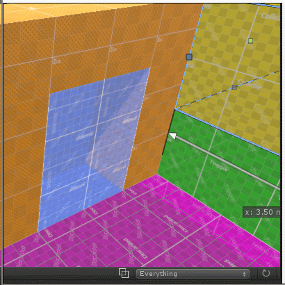
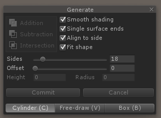

When you first install realtime-CSG you will see these things in your sceneview:

The rebuild button is there for the rare case something goes wrong, in which case you can rebuild your scene to fix things. Under normal circumstances you won't need it. In a future version this button will probably be moved somewhere else.
The dropdown to the right of it allows you to show or hide surfaces that aren't visible in your game.

All other parts are described below.
Realtime CSG can be used with one view, but when designing levels it's better to see your level from multiple sides at once. To make this easier Realtime CSG has some enhancements to Unity to better visualize your level. If you're not interested in setting up a 4 view layout, you can skip this section.
First you change your layout in the top right section, and select the 4 split:
And then set up your views one by one to have 3 orthographic views, and one perspective view. The orthographic views should each look at the scene in top/bottom, front/back and right/left. That way you can see everything from each side.
You can set the view in the top right corner of each sceneview. You can right click on the bottom to select the direction or use the gizmo directly.
Once you've done that, for all the ortho (2D) views you want to turn off the skybox and other effects. You can do that by clicking here:

You probably want to turn off the lighting too (the sun icon).
Finally, you'll want to turn on the special wireframe mode of realtime-CSG that will allow you to see all the brushes in the scene without all the objects blocking each other and only rendering the outlines that are helpfull.
That will turn your view from this:

Into this:
This way you can more easily see all the things that make up your level.
One last thing you might want to do is to turn your tool window into an editor window here:

The tool window is useful to have in your scene view when it's the only view you're using, or when you're maximizing your view and all your editor windows are hidden. But when you're switching between multiple views it can get in the way and then it's better to dock it.
You can also do this by either pressing the hotkey control-F2, or by clicking in the close button on the edit modes window or the tool window.
Finally, you might want to know that when multiple brushes are underneath your mouse cursor, you can then cycle between them by clicking multiple times on the same spot.
Realtime-CSG has a custom grid. It has a couple of options that the default Unity grid does not provide, snapping against the grid is one of them. When snapping is enabled you can snap in different directions with a different step size.
You can type in snapping size manually by clicking on the text boxes. The hot-keys [ and ] allow you to half or double the grid size. If you click on the unit (m) you can toggle between m/cm/mm and the lengths in the scene-view will show everything in that unit as well.
At the top of editor you can switch between local and global mode.
When Unity is in local mode the grid will be rotated to parent of the currently selected object. This allows you to work on a rotated grid.
Another useful feature is that you can choose in what unit the grid and measurements will be displayed, such as meter or centimeter.
When your view is in 2D and you, for instance, move a brush or an edge your movements will automatically be aligned with the view.
In perspective mode, however, your movements will be aligned with the grid in the scene.
If you want to move upwards relative to the grid you can do that by holding Z while dragging.
These are the edit modes that realtime-CSG has:

Object - move, rotate and scale multiple brushes.
Generate - create your brushes.
Mesh - edit the shapes of multiple brushes
Clip - clip away pieces from, or split, multiple brushes.
Surfaces - edit the texturing and smoothing of the sides of the brushes.
Note that you can generate brushes in any edit mode using the hotkeys that are available for that purpose. You can read about that in the "creating your first brushes" section.
There are a couple of ways to create your brushes in the scene.
If you go to the "generate" edit mode you can switch between two different sub-tools to create brushes with (you can see the sub-tools at the bottom of the tool window):

"Free-draw" is the generic shape tool with which you can draw a 2D shape, optionally edit that 2D shape, and extrude it. If you double click on the edges of the 2D shape you're extruding, you can turn those edges into curved surfaces.
You can draw your 2D shape by creating a point everywhere you click. You can do this on any surface in the scene, or just on the grid. Note that you can use this tool in any edit mode by holding V while creating the points and then releasing V.

This is the cylinder shape tool with which you can create a 2D circle and extrude it.
Again, you can create this 2D circle on any surface, or on the grid.
For Cylinders the hotkey is C.
This is the box shape tool with which you can quickly create a rectangle and extrude it.
For Boxes the hotkey is B.
Another way to create your brushes is to drag a prefab into your scene that contains pre-made pieces that you can create yourself. This allows you to easily drag & drop level tile-sets into your scene or smaller pieces like windows, doors etc. while still having the ability to tweak and edit everything.
Sometimes you want the parts that you drag into your scene to not retain a link to your original prefab. Realtime-CSG has the option to set a Prefab to "Copy". If you drag & drop a Prefab into the scene that is marked as a "Copy" prefab, it'll be copied into your scene as a new object instead.
This option will only show up if the top most GameObject has a Brush or an Operation.
When you drag your prefab over the scene, it'll align with the underlying surface when dragged over other brushes. To ensure that your prefab is orientated correctly, make sure it's build at the origin and faces upwards.